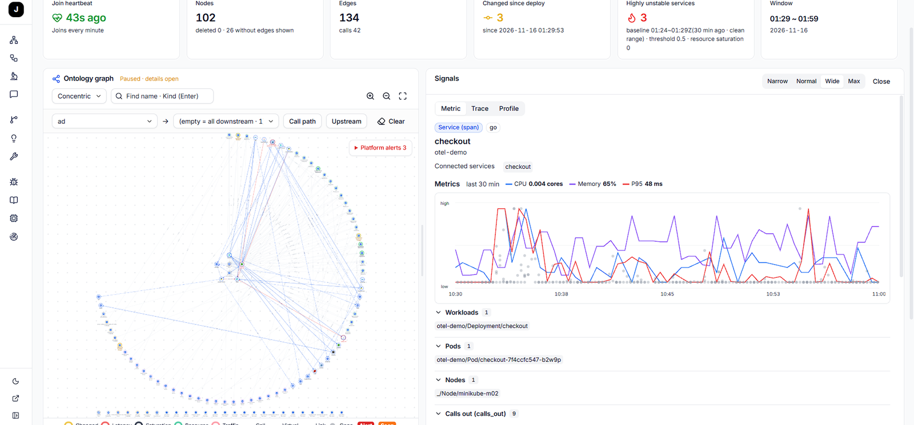
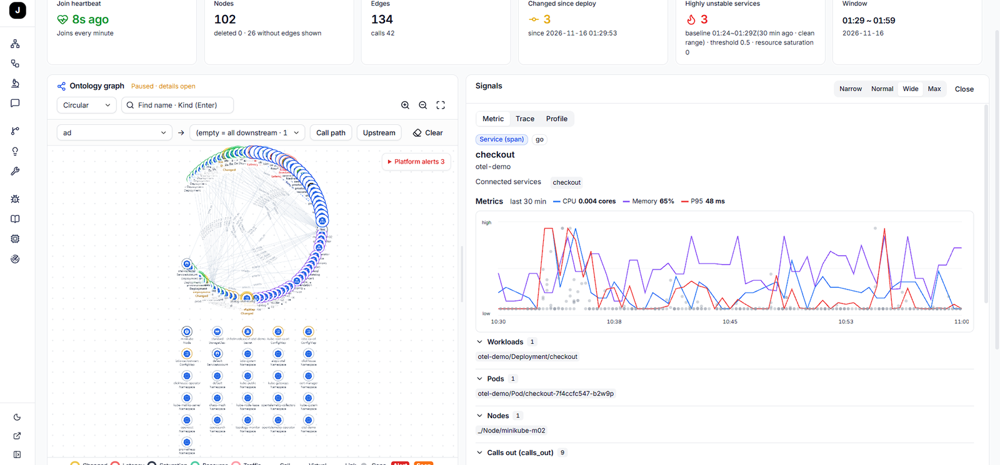
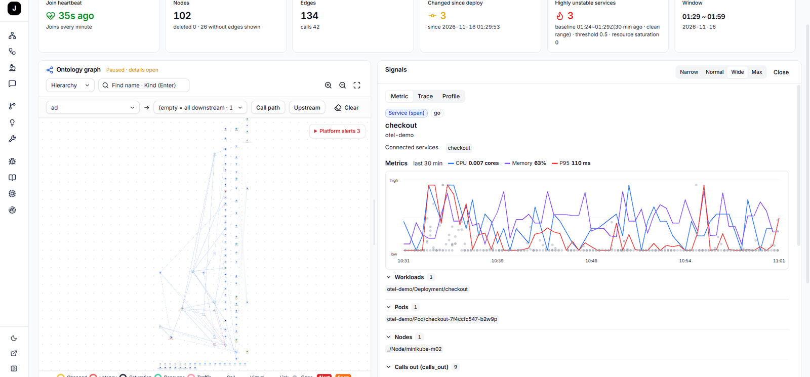
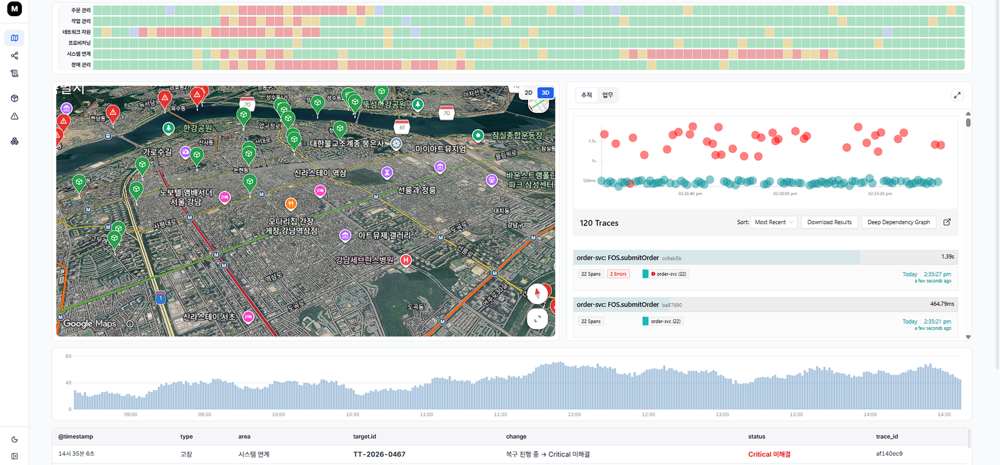

1. 온톨로지란 무엇인가
온톨로지(Ontology)는 한마디로 AI가 읽고 추론할 수 있는 "업무의 지도"이다.
시스템 안에는 수많은 구성 요소가 있다 — 고객, 주문, 회선, 포트, 장비, 작업 지시, 설비, 부품…. 그리고 이들은 서로 복잡하게 연결되어 있다. "이 고객의 주문은 저 회선을 쓰고, 그 회선은 이 장비의 포트에 물려 있다"처럼 말이다.
온톨로지는 이 구성 요소(개념)와 그 사이의 관계를, 사람이 아니라 AI가 따라갈 수 있는 구조로 정리한 것이다. 온톨로지가 있으면 AI는 증상이 나타난 지점에서 관계를 타고 내려가 진짜 원인을 스스로 찾고, "이 장애가 어느 고객에게 영향을 주는가"를 즉시 되짚을 수 있다.
팔란티어(Palantir)가 증명했듯, 온톨로지를 중심에 둔 운영과 의사결정은 기업이 데이터를 진짜 "판단"으로 바꾸는 가장 강력한 방법이다. JuneAI는 이 온톨로지 중심 접근을 더 가볍고, 더 빠르고, 더 저렴하게 실현한다.
2. 온톨로지는 사람이 아니라 AI를 위한 것
온톨로지는 사람이 보고 이해할 수도 있다. 화면에 그려진 관계도를 따라가며 "이 고객이 저 회선을 쓰고, 그 회선은 저 장비에 물려 있구나" 하고 읽어 낼 수 있다. 하지만 온톨로지의 진짜 가치는 거기에 있지 않다.
온톨로지의 진정한 가치는 AI가 온톨로지를 바라보며 스스로 의사결정을 내릴 수 있을 때 비로소 드러난다. 사람은 한 번에 몇 개의 관계밖에 따라가지 못하지만, AI 에이전트는 수천·수만 개의 관계를 동시에 짚어 가며 "증상 → 원인 → 조치"에 이르는 길을 스스로 찾아낸다.
반대로 온톨로지가 없다면, 에이전트는 매번 API와 SQL을 직접 호출하고 토큰을 소비하면서 문제점을 하나하나 탐색해야 한다. 아주 비효율적이고, 시간이 오래 걸리며, 비용도 많이 든다. 온톨로지는 이 탐색의 지도를 미리 깔아 두어, 에이전트가 헤매지 않고 바로 답으로 향하게 한다.
그래서 JuneAI 온톨로지는 사람보다 AI 에이전트를 위해 설계된 온톨로지이다. 사람이 보기 좋은 그림을 그리는 데서 그치지 않고, AI가 읽고 추론하기에 가장 적합한 구조로 업무를 표현한다.
온톨로지가 AI의 판단을 떠받친다
잘 만든 온톨로지는 AI의 의사결정에 직접 영향을 준다.
- 🎯 정확도 향상 — AI가 흩어진 데이터를 어림짐작하는 대신 명확한 관계를 따라 추론하므로, 더 정확한 결론에 이른다.
- 🔒 신뢰성 향상 — 판단의 근거가 온톨로지의 관계로 설명되므로, "왜 그렇게 판단했는가"를 추적하고 검증할 수 있다.
- 🧭 일관된 의사결정 — 같은 상황이면 같은 경로를 따라 판단에 이르러, 사람마다·순간마다 흔들리지 않는다.
온톨로지는 AI에게 "판단의 토대"이다. 토대가 튼튼할수록 그 위에서 내리는 AI의 결정은 더 정확하고, 더 신뢰할 수 있으며, 더 설명 가능해진다.
3. 기존 온톨로지 구축의 문제 — 무겁고, 비싸고, 오래 걸린다
전통적인 온톨로지·데이터 플랫폼 방식은 온톨로지 하나를 세우기 위해 거대한 사전 작업을 요구한다.
- 데이터 파이프라인 구축 — 여기저기 흩어진 데이터를 끌어모으는 배관 공사
- 데이터 레이크 적재 — 원천 데이터를 한곳에 쌓는 대형 저장소
- 메타데이터·리니지(Lineage) 관리 — 데이터의 출처와 흐름을 일일이 추적
- BI 도구 연동 — 결과를 보여 주기 위한 별도 분석 체계
이 모든 것을 갖추는 데 막대한 비용과 긴 시간이 들고, 무엇보다 현재 운영 중인 레거시 시스템을 건드려야 하는 리스크가 따른다. 온톨로지를 쓰기도 전에, 온톨로지를 만드는 프로젝트 자체가 수개월에서 수년짜리 대공사가 되는 것이다.
4. JuneAI의 새로운 접근 — 운영 코드를 바꾸지 않는다
JuneAI 온톨로지는 경쟁사와 전혀 다른 새로운 방식으로 온톨로지를 구성한다.
- ✅ 재시작 불필요 — 운영 중인 시스템을 멈추지 않는다.
- ✅ 코드 변경 불필요 — 지금 돌아가는 코드를 그대로 둔다.
- ✅ 데이터 파이프라인·레이크·메타데이터·리니지·BI 불필요 — 무거운 데이터 사전 작업이 필요 없다.
- ✅ 추가 개발 없이 단기간 구축 — 대형 프로젝트가 아니라, 짧은 기간에 바로 세운다.
즉, 현재 운영 중인 코드 그대로 온톨로지를 구성한다. 레거시를 바꿔야 하는 위험과 고비용을 걷어 내고, 추가 개발 없이 단기간에 구축함으로써 — 비용을 절감하고, 빠르게 의사결정에 도달할 수 있는 획기적인 온톨로지를 만들어 낸다.
기존 방식 vs JuneAI
| 구분 | 전통적 온톨로지·데이터 플랫폼 | JuneAI 온톨로지 |
|---|---|---|
| 데이터 파이프라인 | 필요 (대규모 구축) | 불필요 |
| 데이터 레이크 | 필요 | 불필요 |
| 메타데이터·리니지 | 별도 관리 | 불필요 |
| BI 연동 | 별도 체계 | 불필요 |
| 운영 코드 | 변경·재배포 필요 | 그대로 유지 |
| 시스템 재시작 | 필요한 경우 많음 | 불필요 |
| 구축 기간 | 수개월~수년 | 단기간 |
| 레거시 리스크 | 높음 | 낮음 |






5. 온톨로지가 여는 것 — 자율 운영과 자가 치유
온톨로지를 갖추면 업무 프로세스와 내부 운영 양쪽에 자율 운영(Autonomous Operations)과 자가 치유(Self-Healing)를 도입할 수 있다.
5-1. 업무 프로세스 — 산업별 온톨로지
JuneAI는 산업 특성에 맞는 온톨로지를 제공한다.
🏭 설비·제조 — 지능형 정비
- 설비 고장 원인 분석 및 지능형 진단 — 고장의 뿌리 원인을 AI가 추적
- 예지 정비 및 고장 위험 예측 — 고장이 나기 전에 미리 감지하고 대비
- 정비 작업 지시 자동 생성 및 최적화 — 누가·언제·무엇을 할지 AI가 작성·최적화
- 예비품 및 공급망 지능화 — 부품 수급과 공급망을 데이터로 지능화
📡 통신 — 주문부터 개통, 장애까지
- 고객 주문부터 개통까지 — 주문 접수에서 서비스 개통까지 전 과정 연결
- 현장 작업 및 작업자 배정 — 현장 작업을 적절한 작업자에게 자동 배정
- 회선·포트·장비 관리 — 복잡하게 얽힌 네트워크 자원을 관계로 파악
- 장애 접수 및 복구 — 장애를 받아 원인을 찾고 복구까지
- 장애 영향 고객 파악 — 하나의 장애가 어느 고객에게 미치는지 즉시 역추적
5-2. 내부 운영 — AIOps에 온톨로지 적용
JuneAI는 시스템 운영(AIOps)에도 온톨로지를 적용한다.
- 서비스에 지연·병목 등 이상이 발생한다.
- AIOps가 이를 스스로 식별하고, 근본 원인을 자동으로 분석한다.
- 에이전트가 직접 조치해 문제를 해결한다.
사람이 일일이 로그를 뒤지지 않아도, 온톨로지라는 지도를 따라 "증상 → 원인 → 조치"가 자동으로 이어진다.
6. RAG도, 그래프 DB도 쓰지 않는다
온톨로지와 에이전트를 만들 때, 많은 사람들이 RAG(검색 증강 생성)나 그래프 데이터베이스(Graph DB)를 쓴다. 둘 다 널리 쓰이는 방식이다. 하지만 JuneAI는 둘 다 사용하지 않는다.
이유는 분명하다. RAG와 그래프 DB는 무겁고, 정확도가 낮고, AI에 친화적이지 않기 때문이다.
RAG — 문서를 "검색"하는 방식의 한계
RAG는 문서를 검색해 와서 그 내용을 근거로 답을 만드는 방식이다. 유용하지만, 운영의 핵심에 쓰기에는 한계가 분명하다.
- 정확도의 한계 — 문서를 "찾아 읽는" 것과, 구성 요소의 관계를 따라 추론하는 것은 다른 차원이다. 비슷한 문장은 찾아와도, 여러 단계를 거슬러 올라가는 원인 추론은 하지 못한다.
- 막대한 선행 비용 — 쓸 만한 문서를 모으고, 잘게 쪼개고, 정제하는 수집·전처리 작업 자체가 큰 프로젝트가 된다.
- 관계를 잃어버린다 — 문서를 잘게 쪼개 벡터로 저장하는 순간, "A가 B를 호출하고 B가 C에 의존한다"는 연결 구조가 흩어진다.
그래프 DB — 관계는 담지만, 여전히 무겁다
그래프 DB는 관계를 노드·엣지로 담아 RAG보다 낫다고 여겨진다. 하지만 운영의 토대로 삼기에는 또 다른 부담이 따른다.
- 무거운 인프라 — 별도의 그래프 엔진을 세우고 운영해야 한다. 사실상 또 하나의 데이터 플랫폼을 들이는 일이다.
- 모델링 부담 — 스키마와 적재 파이프라인을 사람이 설계·유지해야 하고, 업무가 바뀌면 그때마다 다시 손봐야 한다.
- AI 비친화 — AI가 그래프를 바로 읽지 못하고, 매번 그래프 질의어로 번역해야 한다. 그 번역이 빗나가면 정확도도 함께 떨어진다.
JuneAI — 업무를 분석해, 독자적으로 구성한다
JuneAI 온톨로지는 RAG의 문서 더미도, 그래프 DB의 별도 엔진도 쓰지 않는다. 대신 업무 자체를 분석해, 독자적인 방식으로 온톨로지를 구성한다. 운영이 이미 내보내는 신호(관측가능성)와 업무 구조에서 바로 온톨로지를 세우고, AI가 그대로 읽고 추론할 수 있는 형태로 둔다.
- 가볍다 — 별도의 벡터 저장소나 그래프 엔진이 필요 없다.
- 정확하다 — 업무와 운영 구조를 그대로 반영하므로, 어림짐작이 아니라 실제 관계로 추론한다.
- AI 친화적이다 — 모델이 중간 번역 없이 바로 이해하도록 구성된다.
| 구분 | RAG (벡터 검색) | 그래프 DB | JuneAI 독자 온톨로지 |
|---|---|---|---|
| 구성 방식 | 잘게 쪼갠 문서 조각(벡터) | 별도 엔진의 노드·엣지 | 업무·운영 구조 그대로, 독자 형식 |
| 무게 | 수집·전처리·벡터DB 필요 | 그래프 인프라·모델링 필요 | 별도 인프라 없이 가볍다 |
| 정확도 | 문장 유사도라 추론이 약함 | 질의 번역에 좌우됨 | 실제 관계로 추론(높음) |
| AI 친화성 | 검색 결과를 재해석해야 함 | 그래프 질의어로 번역 필요 | AI가 바로 읽음 |
많은 프로젝트가 RAG와 그래프 DB에 기대지만, JuneAI는 그 둘 없이 — 오히려 더 가볍고, 더 정확하고, 더 AI 친화적인 방식으로 온톨로지를 올린다.
7. 숫자로 보는 JuneAI
| 항목 | 규모 | 의미 |
|---|---|---|
| 이상탐지 | 320개 이상 | 다양한 장애·이상 패턴을 폭넓게 자동 감지 |
| 채팅 프롬프트 | 100개 이상 | 운영자가 바로 쓸 수 있는 질의·분석 템플릿 |
| 온톨로지 구축 | 단기간 | 추가 개발·코드 변경 없이 빠르게 세팅 |
| 관계 기반 추론 | 상시 | 운영 구조와 관계를 따라 원인·영향을 투명하게 분석 |
- 320개 이상의 이상탐지 — 폭넓은 이상 패턴을 기본 제공해, 도입 즉시 넓은 범위를 커버한다.
- 100개 이상의 채팅 프롬프트 — 운영자가 직접 운영할 때 바로 활용할 수 있는 질의·분석 프롬프트를 갖추고 있다.
8. 온톨로지에 대한 올바른 기대
온톨로지는 시스템으로 구성하는 것이고, 사람과 에이전트가 모두 해석할 수 있어야 한다. 사람만 읽히는 그림도, 기계만 읽히는 자료도 아니다. 양쪽이 같은 구조를 보고 같은 결론으로 향할 수 있어야 제값을 한다.
그렇다고 온톨로지가 모든 것을 푸는 마법은 아니다. 복잡한 비즈니스 문제라면, 사람도 어렵고 에이전트도 쉽게 답을 못 내는 것이 정상이다. 온톨로지로 만든다고 모든 비즈니스 문제가 해결되는 것이 아니다. 갑자기 매출이 100% 증가하는 시스템을 상상한다면 곤란하다.
온톨로지가 하는 일은 분명하다. 숨겨진 문제가 도드라지게 표현되고, 근본 원인이 무엇인지 문제를 표현할 수 있어야 한다. 문제는 에러처럼 눈에 금방 보이지 않고, 지연처럼 자주 발생하지도 않으며, 숨겨져 있는 것이 정상이다. 온톨로지는 그 숨은 문제를 드러내고, 어디서 비롯됐는지 짚어 준다.
온톨로지는 문제를 대신 풀어 주는 도구가 아니라, 숨은 문제를 드러내고 근본 원인을 표현하는 도구이다. 답을 내리는 것은 그 위에서 판단하는 사람과 에이전트의 몫이다.
9. 정리
- 온톨로지 = AI가 읽는 업무의 지도 — 데이터를 진짜 판단으로 바꾸는 핵심.
- 기존 방식은 무겁다 — 파이프라인·레이크·메타데이터·리니지·BI에 막대한 비용과 시간, 레거시 리스크.
- JuneAI는 가볍다 — 운영 중인 코드 그대로, 재시작·코드 변경·데이터 사전 작업 없이, 단기간에 구축.
- 온톨로지가 자율 운영과 자가 치유를 연다 — 업무 프로세스(설비·통신)와 내부 운영(AIOps) 모두에.
- RAG도 그래프 DB도 쓰지 않는다 — 무겁고 부정확한 두 방식 대신, 업무를 분석해 독자적으로 구성한다. 더 가볍고, 더 정확하고, 더 AI 친화적.
- 검증 가능한 AI — 320개 이상의 이상탐지, 100개 이상의 프롬프트, 그리고 추적으로 들여다보는 투명성.
팔란티어가 보여 준 온톨로지 중심 운영의 가치를, JuneAI는 레거시를 건드리지 않고 단기간에 — 더 낮은 비용으로, 더 빠르게, 그리고 검증 가능하게 현실로 만든다.